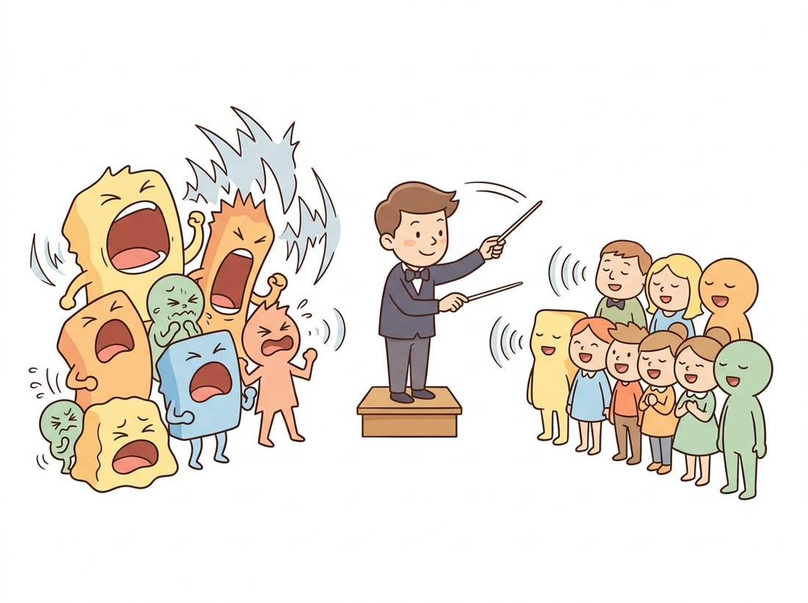
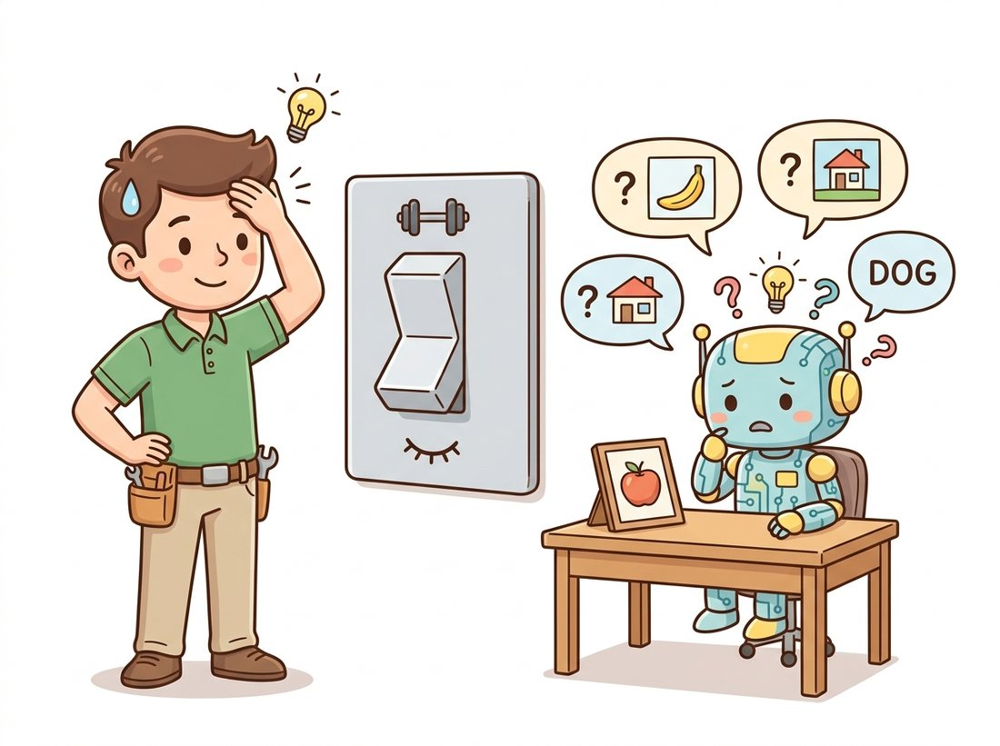

"Before I arrived, every layer shouted at a different volume and the gradients gave up. Now everyone speaks at mean zero, variance one. Training finished early and the loss landscape sent flowers."
A Batch-Normalization Layer, Quietly Taking Credit
Batch normalization standardizes each layer's activations to zero mean and unit variance across the batch, then lets the network rescale them with two learnable parameters, and this single trick is what made deep CNNs train reliably and fast. The original "internal covariate shift" explanation has been disputed, but the empirical effect is not in doubt: networks with batch norm tolerate higher learning rates, are far less sensitive to initialization, and converge in a fraction of the epochs. This section derives the operation, explains its tricky train-versus-eval split, and tells you when to reach for its layer, group, and instance normalization cousins instead.
By Section 19.3 you can design a CNN with the right shapes and receptive fields, but if you stacked a dozen of those layers around 2014 and trained them with the loop from Chapter 18, you would likely watch the loss stall or diverge. The reason is that as activations flow through many layers, their scale and distribution drift unpredictably, so a learning rate that suits one layer destroys another, and gradients vanish or explode. Batch normalization, introduced by Ioffe and Szegedy in 2015, attacked this directly and was so effective that it became near-universal almost overnight. It is also the stabilizer behind the depth of every architecture in Chapter 20. This section is the one piece of machinery, beyond the convolution itself, that you must understand to train the network in Section 19.5.
1. The Problem: Drifting Statistics in Deep Stacks Intermediate
Consider what a layer experiences during training. Its input is the output of the layer below, whose weights are changing every step. So the distribution of inputs that any given layer sees is a moving target: its mean and variance shift from batch to batch and epoch to epoch as the lower layers learn. Ioffe and Szegedy named this internal covariate shift and argued it forces each layer to continuously re-adapt to its input's changing statistics, which slows learning. Whether or not that is the true mechanism (later work by Santurkar et al. argued the real benefit is a smoother loss landscape), the symptom is real: deep networks were brittle, needed careful initialization and small learning rates, and trained slowly. The illustration below recasts batch normalization as the conductor that fixes this.

2. The Batch-Norm Operation Intermediate
Batch normalization inserts a layer that, for each feature (each channel, in a CNN), standardizes the activations over the current mini-batch. For a batch of activations $\{x_1, \ldots, x_m\}$ for one feature, it computes the batch mean and variance, normalizes, then applies a learnable scale $\gamma$ and shift $\beta$:
$$ \mu_B = \frac{1}{m}\sum_{i=1}^{m} x_i, \qquad \sigma_B^2 = \frac{1}{m}\sum_{i=1}^{m}(x_i - \mu_B)^2, $$
$$ \hat{x}_i = \frac{x_i - \mu_B}{\sqrt{\sigma_B^2 + \epsilon}}, \qquad y_i = \gamma\,\hat{x}_i + \beta. $$
The first three quantities standardize the feature to zero mean and unit variance, with a small $\epsilon$ (typically $10^{-5}$) guarding against division by zero. The last step is the subtle and important one: $\gamma$ and $\beta$ are learnable, so the network can undo the normalization if it wants, recovering any mean and scale, including the identity. Normalization does not lock the activations to zero mean and unit variance; it gives the optimizer a well-conditioned starting point and lets it choose the final scale through two cheap parameters per channel. For a CNN, the statistics are pooled over the batch and the spatial dimensions, so a layer with $C$ channels has exactly $C$ values of $\gamma$ and $C$ of $\beta$. Figure 19.4.1 traces the two stages, the parameter-free standardization followed by the learnable rescaling.
3. Train Versus Eval: The Running Statistics Intermediate
Batch norm has a behavior that catches almost everyone once: it acts differently in training and inference, and forgetting to flip the switch is a classic bug. During training it uses the current batch's mean and variance, which is fine because a training batch is large and representative. At inference you may need to classify a single image, where a "batch mean" is meaningless, and you want a deterministic output that does not depend on which other images happen to share the batch. So during training the layer also accumulates a running estimate of the mean and variance (an exponential moving average), and at inference it uses those fixed running statistics instead of the batch.
In PyTorch this is governed by the module's mode: model.train() uses batch statistics and updates the running averages; model.eval() freezes and uses the running averages. The code below shows both the manual computation and the failure mode of forgetting eval().
import torch
import torch.nn as nn
torch.manual_seed(0)
bn = nn.BatchNorm2d(num_features=4) # 4 channels -> 4 gammas, 4 betas
x = torch.randn(16, 4, 8, 8) * 3 + 5 # batch with mean ~5, std ~3
# --- training mode: normalize with batch stats, update running stats ---
bn.train()
y = bn(x)
# Per-channel mean ~0 and variance ~1 after normalization (gamma=1, beta=0 init).
print(y.mean(dim=(0, 2, 3)).round(decimals=3)) # ~ tensor([0., 0., 0., 0.])
print(y.var(dim=(0, 2, 3), unbiased=False).round(decimals=2)) # ~ tensor([1., 1., 1., 1.])
# --- the classic bug: a single image in TRAIN mode ---
bn.train()
single_train = bn(x[:1]) # batch size 1: variance is computed over 1 sample -> unstable
# --- the fix: eval mode uses the stored running statistics, deterministic ---
bn.eval()
single_eval = bn(x[:1]) # uses running mean/var accumulated during training
print(torch.allclose(single_train, single_eval)) # Expected output: Falseeval() uses the accumulated running statistics for a deterministic result. The False result is the symptom of the most common batch-norm bug.Forgetting model.eval() before validation or deployment is the single most common batch-norm mistake, and it produces a maddening symptom: training accuracy looks fine, validation accuracy is erratic or worse than random on small batches. The reason is that in train mode each validation batch is normalized by its own statistics, so the same image gets different predictions depending on its batch-mates. Always call model.eval() before evaluation and model.train() before resuming training. The same switch also controls dropout, so the rule is universal, not specific to batch norm.
Every practitioner eventually loses an afternoon to this: training looks great, validation is garbage, and the model gets blamed. The culprit is one missing model.eval(), so batch norm normalizes each validation batch by its own neighbors and the same image gets a different verdict depending on its lunch companions. The fix is a single line and the lesson is permanent. Tattoo it: train mode trusts the batch, eval mode trusts the memory. Forgetting to switch is not a deep-learning failure; it is a light-switch failure, as the illustration below makes plain.

4. Why It Works, and the Side Effects Advanced
The honest modern view is that batch norm helps for reasons not fully captured by the original covariate-shift story. Santurkar et al. (2018) showed empirically that batch norm makes the loss landscape smoother (the gradients change more slowly and predictably), which is what permits the larger learning rates and faster convergence. The size of that speedup is the detail worth remembering: in the original Inception experiments, the batch-norm network reached the same accuracy the baseline took 31 million training steps to hit after only about 2.1 million steps, roughly a fourteen-fold reduction, and a more aggressive batch-norm variant beat the baseline's final accuracy outright. Adding two cheap parameters per channel turned a two-week training run into a one-day one, which is why the technique was adopted almost overnight. Whatever the precise mechanism, batch norm brings several effects that are useful to know. It acts as a mild regularizer, because the batch statistics inject a small amount of noise that depends on the batch composition, which is why networks with batch norm sometimes need less dropout. It makes the network far more robust to the scale of initialization, since the first thing each layer does is renormalize. And it couples the examples in a batch, which is the root of its main weakness.
That weakness is dependence on batch size. With a small batch (say 2 or 4 images, common when training high-resolution models or large detectors that barely fit in memory), the batch statistics are noisy estimates, and batch norm degrades or destabilizes. This is the practical reason its friends exist.
5. The Friends: Layer, Group, and Instance Normalization Advanced
The normalization family differs only in which axes the mean and variance are computed over. Batch norm pools over the batch and spatial dimensions, per channel. The alternatives keep the standardize-then-rescale idea but change the pooling set so they do not depend on the batch. Table 19.4.1 lays them out, and Figure 19.4.2 sketches the axes each one normalizes.
| Method | Statistics pooled over | Batch-size dependent? | Typical use |
|---|---|---|---|
| Batch norm | $N, H, W$ (per channel) | Yes | CNN classifiers with reasonable batch size |
| Layer norm | $C, H, W$ (per sample) | No | Transformers (Chapter 22), ConvNeXt |
| Instance norm | $H, W$ (per sample, per channel) | No | Style transfer, generative models |
| Group norm | $H, W$ over channel groups (per sample) | No | Detection, segmentation, small batches |
The practical decision tree is short. For a standard image classifier trained with a batch of 32 or more, use batch norm; it is the default and usually the best. For tiny batches (detection, segmentation, video, or 3D where each example is huge), use group norm, which Wu and He showed matches batch norm without the batch dependence. For transformers and ConvNeXt-style networks, use layer norm. For style transfer and many generative models, instance norm removes per-image contrast, which is exactly what those tasks want. Chapter 22 will lean on layer norm throughout, and the U-Net of Chapter 33 typically uses group norm.
Who: A team fine-tuning a high-resolution object detector for warehouse inventory on a single workstation GPU.
Situation: The detector's backbone used batch norm, inherited from its ImageNet pretraining. At $1280 \times 1280$ resolution, only two images fit in GPU memory per step.
Problem: Training was unstable and validation accuracy oscillated wildly between epochs. With a batch of two, the batch-norm statistics were computed from two images, so the per-step normalization was extremely noisy, and the running averages it accumulated were unreliable.
Decision: Replace every BatchNorm2d in the backbone with GroupNorm using 32 groups, a one-line swap per layer, and re-fine-tune. Group norm computes its statistics within each image, so a batch of two is no different from a batch of two hundred.
Result: Training stabilized immediately, validation accuracy stopped oscillating, and the final detector matched a version trained on a much larger machine with big-batch batch norm. The fix cost an afternoon and no extra hardware.
Lesson: Batch norm's batch dependence is invisible until your batch is small, and then it is the first thing to suspect. Knowing the normalization family lets you swap in a batch-independent variant the moment memory forces tiny batches, which is routine for detection, segmentation, and generation.
The forward and backward passes of batch norm, including the running-statistics bookkeeping and the chain rule through the mean and variance, are roughly forty lines to implement correctly from scratch. PyTorch gives you nn.BatchNorm2d(channels), nn.GroupNorm(num_groups, channels), nn.LayerNorm(shape), and nn.InstanceNorm2d(channels), each one line, each with a tested, fused backward pass and the correct train/eval behavior. The conv-BN-ReLU block you will assemble in Section 19.5 is three such lines. Write the from-scratch version once to understand it, as the exercise below asks, then never again.
A persistent research thread asks whether normalization is essential or merely convenient. NFNets (Brock et al., ICML 2021, arXiv:2102.06171) removed batch norm entirely, using adaptive gradient clipping and scaled weight standardization to reach state-of-the-art ImageNet accuracy, showing the benefits can be obtained by other means. More recently, work on transformers has questioned layer norm too: "Transformers without Normalization" (Zhu et al., CVPR 2025, arXiv:2503.10622) replaces layer norm with a simple learnable tanh-based scaling ("Dynamic Tanh") and matches normalized baselines, suggesting normalization's role is partly to bound activations rather than to fix any covariate shift. The takeaway for a practitioner in 2026: normalization is a powerful default, not a law of nature, and the field is actively mapping what it actually provides.
With normalization in hand, every obstacle to training a deep CNN is cleared. You have the layer (Section 19.2), the geometry (Section 19.3), and now the stabilizer that lets the stack train. Section 19.5 assembles all of it into a complete convolutional network and trains it end to end on CIFAR-10, with the full data, optimization, and evaluation loop.
Explain, in terms of $\gamma$ and $\beta$, why adding a batch-norm layer never reduces the set of functions a network can represent, even though it forces zero mean and unit variance before the rescaling. Then explain why a convolutional layer immediately followed by batch norm makes the convolution's bias term redundant (so PyTorch users set bias=False on convolutions before batch norm), and say what happens to the convolution's overall scale.
Write a function batchnorm2d_forward(x, gamma, beta, eps=1e-5) that takes a tensor of shape (N, C, H, W) and returns the normalized, scaled, and shifted output, computing the mean and variance over the N, H, and W axes per channel. Validate it against nn.functional.batch_norm in training mode (pass training=True, running_mean=None, running_var=None) on a random tensor, and report the maximum absolute difference (it should be below 1e-5).
For each scenario, state which normalization (batch, layer, group, or instance) you would use and why in one sentence: (a) an ImageNet classifier with batch size 64; (b) a semantic segmentation model where each $1024 \times 1024$ image fills the GPU so batch size is 1; (c) a vision transformer; (d) a neural style-transfer network that should ignore the source image's global contrast. Then explain why none of (b), (c), or (d) has the train-versus-eval running-statistics complication that batch norm does.